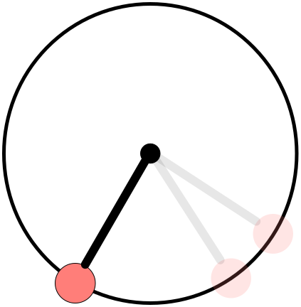

ODE solve example 1¶
{kind=link}
Load ODE¶
Consider the ODE:
\[\begin{split}\begin{cases}
\theta' = \omega & \\
\omega' = -\displaystyle\frac{g}{\ell}\sin\theta &
\end{cases}\end{split}\]
Define the class for the ODE to be integrated.
In this case the class LinearPendulumODE derived from
the base class LinearPendulumODE.
The following is the contents of the file LinearPendulumODE.m
classdef LinearPendulumODE < DIAL_ODEsystem
%
properties (SetAccess = protected, Hidden = true)
%
%> Pendulum mass (kg)
%
m_m;
%
%> Pendulum length (m)
%
m_l;
%
%> Gravity acceleration (m/s^2)
%
m_g;
end
%
methods
%
% - - - - - - - - - - - - - - - - - - - - - - - - - - - - - - - - - - -
%
function this = LinearPendulumODE( m, l, g )
neq = 2;
ninv = 0;
this@DIAL_ODEsystem( 'LinearPendulumODE', neq, ninv );
this.m_m = m;
this.m_l = l;
this.m_g = g;
end
%
% - - - - - - - - - - - - - - - - - - - - - - - - - - - - - - - - - - -
%
function out = f( this, ~, X )
out = zeros(2,1);
out(1) = X(2);
out(2) = -this.m_g / this.m_l * X(1);
end
%
% - - - - - - - - - - - - - - - - - - - - - - - - - - - - - - - - - - -
%
function out = DfDx( this, ~, ~ )
out = zeros(2,2);
out(1,2) = 1.0;
out(2,1) = -this.m_g / this.m_l;
end
%
% - - - - - - - - - - - - - - - - - - - - - - - - - - - - - - - - - - -
%
function h( ~, ~, ~ )
end
%
% - - - - - - - - - - - - - - - - - - - - - - - - - - - - - - - - - - -
%
function DhDx( ~, ~, ~ )
end
%
% - - - - - - - - - - - - - - - - - - - - - - - - - - - - - - - - - - -
%
function plot( this, ~, X )
x = this.m_l*sin(X(1));
y = -this.m_l*cos(X(1));
x0 = 0;
y0 = 0;
tt = 0:pi/100:2*pi;
xx = this.m_l*cos(tt);
yy = this.m_l*sin(tt);
hold off;
plot(xx, yy, 'LineWidth', 1.0, 'Color', 'red');
hold on;
grid on; grid minor;
xlabel('$x$(m)');
ylabel('$y$(m)');
l = 1.1*this.m_l;
drawLine(x0, y0, x, y, 'LineWidth', 5, 'Color', 'k');
drawCOG( 0.1*this.m_l, x0, y0 );
fillCircle( 'r', x, y, 0.1*this.m_l );
xlim([-l, l]);
ylim([-l, l]);
axis equal;
end
%
% - - - - - - - - - - - - - - - - - - - - - - - - - - - - - - - - - - -
%
function out = exact( this, x_i, t )
sqrt_g_l = sqrt(this.m_g / this.m_l);
out = zeros(2,length(t));
out(1,:) = -sqrt_g_l .* x_i(2) .* sin(sqrt_g_l .* t) + x_i(1) * cos(sqrt_g_l .* t);
out(2,:) = sqrt_g_l .* (sqrt_g_l .* x_i(2) .* cos(sqrt_g_l .* t) - x_i(1) * sin(sqrt_g_l .* t));
end
%
%
% - - - - - - - - - - - - - - - - - - - - - - - - - - - - - - - - - - -
%
end
%
end
Instantiate the ODE¶
Having LinearPendulumODE.m now can instantiate the ODE:
% Load the linear pendulum model
m = 1.0; % Mass (kg)
l = 1.0; % Length (m)
g = 9.81; % Gravity (m/s^2)
ODE = LinearPendulumODE( m, l, g );
Choose solver¶
Choose ExplicitEuler as solver and attach the instantiated ODE to it:
solver = ExplicitEuler(); % Initialize solver
solver.setODE(ODE); % Attach ODE to the solver
Integrate¶
Select the range and the sampling point for the numerical solution:
d_t = 0.05; % (s)
T_ini = 0.0; % (s)
T_end = 10.0; % (s)
tt = T_ini:d_t:T_end;
Setup initial condition:
theta0 = pi/6;
omega0 = 0;
ini = [theta0;omega0];
Compute numerical solution:
sol = solver.advance( tt, ini );
now the matrix sol contain the solution.
The first column contain (theta) the second column
contains (omega).
Extract solution¶
theta = sol(1,:);
omega = sol(2,:);
x = l*sin(theta);
y = -l*cos(theta);
Plot the solution¶
% Sample a circle and plot (the constraint)
xx = l*cos(0:pi/100:2*pi);
yy = l*sin(0:pi/100:2*pi);
plot( xx, yy, '-r', 'Linewidth', 1 );
hold on
axis equal
plot( x, y, '-o', 'MarkerSize', 6, 'Linewidth', 2, 'Color', 'blue' );
title('x,y');
{kind=link}
plot( tt, theta, '-o', 'MarkerSize', 6, 'Linewidth', 2 );
hold on;
legend('Explicit Euler');
title('theta');

plot( tt, omega, '-o', 'MarkerSize', 6, 'Linewidth', 2 );
hold on;
legend('Explicit Euler');
title('omega');
{kind=link}
ode.animatePlot( tt, sol, 10, 1 );